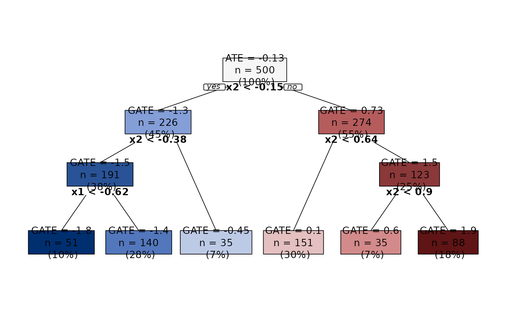

Nonparametric data-driven approach to discovering heterogeneous subgroups in a selection-on-observables framework. The approach constructs a sequence of groupings, one for each level of granularity. Groupings are nested and feature an optimality property. For each grouping, we obtain point estimation and standard errors for the group average treatment effects (GATEs) using debiased machine learning procedures. Additionally, we assess whether systematic heterogeneity is found by testing the hypotheses that the differences in the GATEs across all pairs of groups are zero. Finally, we investigate the driving mechanisms of effect heterogeneity by computing the average characteristics of units in each group.
build_aggtree(
Y_tr,
D_tr,
X_tr,
Y_hon = NULL,
D_hon = NULL,
X_hon = NULL,
cates_tr = NULL,
cates_hon = NULL,
method = "aipw",
scores = NULL,
...
)
inference_aggtree(object, n_groups, boot_ci = FALSE, boot_R = 2000)Outcome vector for training sample.
Treatment vector for training sample.
Covariate matrix (no intercept) for training sample.
Outcome vector for honest sample.
Treatment vector for honest sample.
Covariate matrix (no intercept) for honest sample.
Optional, predicted CATEs for honest sample. If not provided by the user, CATEs are estimated internally via a causal_forest.
Either "raw" or "aipw", controls how node predictions are computed.
Optional, vector of scores to be used in computing node predictions. Useful to save computational time if scores have already been estimated. Ignored if method == "raw".
Further arguments from rpart.control.
An aggTrees object.
Number of desired groups.
Logical, whether to compute bootstrap confidence intervals.
Number of bootstrap replications. Ignored if boot_ci == FALSE.
build_aggtree returns an aggTrees object.
inference_aggtree returns an aggTrees.inference object, which in turn contains the aggTrees object used
in the call.
Aggregation trees are a three-step procedure. First, the conditional average treatment effects (CATEs) are estimated using any
estimator. Second, a tree is grown to approximate the CATEs. Third, the tree is pruned to derive a nested sequence of optimal
groupings, one for each granularity level. For each level of granularity, we can obtain point estimation and inference about
the GATEs.
To implement this methodology, the user can rely on two core functions that handle the various steps.
build_aggtree constructs the sequence of groupings (i.e., the tree) and estimate the GATEs in each node. The
GATEs can be estimated in several ways. This is controlled by the method argument. If method == "raw", we
compute the difference in mean outcomes between treated and control observations in each node. This is an unbiased estimator
in randomized experiment. If method == "aipw", we construct doubly-robust scores and average them in each node. This
is unbiased also in observational studies. Honest regression forests and 5-fold cross fitting are used to estimate the
propensity score and the conditional mean function of the outcome (unless the user specifies the argument scores).
The user can provide a vector of the estimated CATEs via the cates_tr and cates_hon arguments. If no CATEs are provided,
these are estimated internally via a causal_forest using only the training sample, that is, Y_tr, D_tr,
and X_tr.
inference_aggtree takes as input an aggTrees object constructed by build_aggtree. Then, for
the desired granularity level, chosen via the n_groups argument, it provides point estimation and standard errors for
the GATEs. Additionally, it performs some hypothesis testing to assess whether we find systematic heterogeneity and computes
the average characteristics of the units in each group to investigate the driving mechanisms.
GATEs and their standard errors are obtained by fitting an appropriate linear model. If method == "raw", we estimate
via OLS the following:
$$Y_i = \sum_{l = 1}^{|T|} L_{i, l} \gamma_l + \sum_{l = 1}^{|T|} L_{i, l} D_i \beta_l + \epsilon_i$$
with L_{i, l} a dummy variable equal to one if the i-th unit falls in the l-th group, and |T| the
number of groups. If the treatment is randomly assigned, one can show that the betas identify the GATE of
each group. However, this is not true in observational studies due to selection into treatment. In this case, the user is
expected to use method == "aipw" when calling build_aggtree. In this case,
inference_aggtree uses the scores in the following regression:
$$score_i = \sum_{l = 1}^{|T|} L_{i, l} \beta_l + \epsilon_i$$
This way, betas again identify the GATEs.
Regardless of method, standard errors are estimated via the Eicker-Huber-White estimator.
If boot_ci == TRUE, the routine also computes asymmetric bias-corrected and accelerated 95% confidence intervals using 2000 bootstrap
samples. Particularly useful when the honest sample is small-ish.
inference_aggtree uses the standard errors obtained by fitting the linear models above to test the hypotheses
that the GATEs are different across all pairs of leaves. Here, we adjust p-values to account for multiple hypotheses testing
using Holm's procedure.
inference_aggtree regresses each covariate on a set of dummies denoting group membership. This way, we get the
average characteristics of units in each leaf, together with a standard error. Leaves are ordered in increasing order of their
predictions (from most negative to most positive). Standard errors are estimated via the Eicker-Huber-White estimator.
Regardless of the chosen method, both functions estimate the GATEs, the linear models, and the average characteristics
of units in each group using only observations in the honest sample. If the honest sample is empty (this happens when the
user either does not provide Y_hon, D_hon, and X_hon or sets them to NULL), the same data used to
construct the tree are used to estimate the above quantities. This is fine for prediction but invalidates inference.
Di Francesco, R. (2022). Aggregation Trees. CEIS Research Paper, 546. doi:10.2139/ssrn.4304256 .
## Generate data.
set.seed(1986)
n <- 1000
k <- 3
X <- matrix(rnorm(n * k), ncol = k)
colnames(X) <- paste0("x", seq_len(k))
D <- rbinom(n, size = 1, prob = 0.5)
mu0 <- 0.5 * X[, 1]
mu1 <- 0.5 * X[, 1] + X[, 2]
Y <- mu0 + D * (mu1 - mu0) + rnorm(n)
## Training-honest sample split.
honest_frac <- 0.5
splits <- sample_split(length(Y), training_frac = (1 - honest_frac))
training_idx <- splits$training_idx
honest_idx <- splits$honest_idx
Y_tr <- Y[training_idx]
D_tr <- D[training_idx]
X_tr <- X[training_idx, ]
Y_hon <- Y[honest_idx]
D_hon <- D[honest_idx]
X_hon <- X[honest_idx, ]
## Construct sequence of groupings. CATEs estimated internally.
groupings <- build_aggtree(Y_tr, D_tr, X_tr, Y_hon, D_hon, X_hon)
## Alternatively, we can estimate the CATEs and pass them.
library(grf)
forest <- causal_forest(X_tr, Y_tr, D_tr) # Use training sample.
cates_tr <- predict(forest, X_tr)$predictions
cates_hon <- predict(forest, X_hon)$predictions
groupings <- build_aggtree(Y_tr, D_tr, X_tr, Y_hon, D_hon, X_hon, cates_tr = cates_tr, cates_hon = cates_hon)
## We have compatibility with generic S3-methods.
summary(groupings)
#> Honest estimates: TRUE
#> Call:
#> rpart::rpart(formula = cates ~ ., data = data.frame(cates = cates_tr,
#> X_tr), method = "anova", model = TRUE, control = rpart::rpart.control(...))
#> n= 500
#>
#> CP nsplit rel error xerror xstd
#> 1 0.7360461 0 1.00000000 1.00439191 0.039833578
#> 2 0.1943360 1 0.26395392 0.27021335 0.012105034
#> 3 0.0218754 2 0.06961795 0.08064756 0.006947625
#> 4 0.0100000 3 0.04774255 0.05108766 0.003389573
#>
#> Variable importance
#> x2 x1 x3
#> 94 5 1
#>
#> Node number 1: 500 observations, complexity param=0.7360461
#> mean=-0.1271354, MSE=0.6493231
#> left son=2 (221 obs) right son=3 (279 obs)
#> Primary splits:
#> x2 < -0.1879849 to the left, improve=0.736046100, (0 missing)
#> x1 < -0.2090187 to the left, improve=0.040496860, (0 missing)
#> x3 < 0.07957051 to the right, improve=0.005618913, (0 missing)
#> Surrogate splits:
#> x1 < -0.2090187 to the left, agree=0.588, adj=0.068, (0 split)
#> x3 < -2.778503 to the left, agree=0.562, adj=0.009, (0 split)
#>
#> Node number 2: 221 observations, complexity param=0.0218754
#> mean=-1.364316, MSE=0.06229607
#> left son=4 (190 obs) right son=5 (31 obs)
#> Primary splits:
#> x2 < -0.383392 to the left, improve=0.5158625, (0 missing)
#> x1 < -0.7607663 to the left, improve=0.1757891, (0 missing)
#> x3 < -0.6784445 to the right, improve=0.0194642, (0 missing)
#>
#> Node number 3: 279 observations, complexity param=0.194336
#> mean=0.6772359, MSE=0.2578074
#> left son=6 (160 obs) right son=7 (119 obs)
#> Primary splits:
#> x2 < 0.6613496 to the left, improve=0.87717150, (0 missing)
#> x3 < 0.5527987 to the right, improve=0.02474377, (0 missing)
#> x1 < -0.6991158 to the left, improve=0.02013863, (0 missing)
#> Surrogate splits:
#> x1 < 1.289389 to the left, agree=0.584, adj=0.025, (0 split)
#> x3 < 2.15878 to the left, agree=0.581, adj=0.017, (0 split)
#>
#> Node number 4: 190 observations
#> mean=-1.509075, MSE=0.02885161
#>
#> Node number 5: 31 observations
#> mean=-0.320842, MSE=0.03817818
#>
#> Node number 6: 160 observations
#> mean=0.06742149, MSE=0.03096881
#>
#> Node number 7: 119 observations
#> mean=1.477908, MSE=0.0326036
#>
print(groupings)
#> Honest estimates: TRUE
#> n= 500
#>
#> node), split, n, deviance, yval
#> * denotes terminal node
#>
#> 1) root 500 324.661600 -0.12713540
#> 2) x2< -0.1879849 221 13.767430 -1.36431600
#> 4) x2< -0.383392 190 5.481807 -1.50907500 *
#> 5) x2>=-0.383392 31 1.183523 -0.32084200 *
#> 3) x2>=-0.1879849 279 71.928260 0.67723590
#> 6) x2< 0.6613496 160 4.955010 0.06742149 *
#> 7) x2>=0.6613496 119 3.879829 1.47790800 *
plot(groupings) # Try also setting 'sequence = TRUE'.

## To predict, do the following.
tree <- subtree(groupings$tree, cv = TRUE) # Select by cross-validation.
head(predict(tree, data.frame(X_hon)))
#> 1 2 3 4 5 6
#> -0.32084200 -1.50907485 -1.50907485 1.47790823 -1.50907485 0.06742149
## Inference with 4 groups.
results <- inference_aggtree(groupings, n_groups = 4)
summary(results$model) # Coefficient of leafk is GATE in k-th leaf.
#>
#> Call:
#> estimatr::lm_robust(formula = scores ~ 0 + leaf, data = data.frame(scores = scores,
#> leaf = leaves), se_type = "HC1")
#>
#> Standard error type: HC1
#>
#> Coefficients:
#> Estimate Std. Error t value Pr(>|t|) CI Lower CI Upper DF
#> leaf1 -1.50907 0.1717 -8.7904 2.454e-17 -1.8464 -1.1718 496
#> leaf2 -0.32084 0.3778 -0.8492 3.962e-01 -1.0632 0.4215 496
#> leaf3 0.06742 0.1576 0.4277 6.690e-01 -0.2423 0.3771 496
#> leaf4 1.47791 0.1870 7.9046 1.754e-14 1.1106 1.8453 496
#>
#> Multiple R-squared: 0.2305 , Adjusted R-squared: 0.2243
#> F-statistic: 35.16 on 4 and 496 DF, p-value: < 2.2e-16
results$gates_diff_pairs$gates_diff # GATEs differences.
#> leaf1 leaf2 leaf3 leaf4
#> leaf1 NA NA NA NA
#> leaf2 1.188233 NA NA NA
#> leaf3 1.576496 0.3882635 NA NA
#> leaf4 2.986983 1.7987502 1.410487 NA
results$gates_diff_pairs$holm_pvalues # leaves 1-2 not statistically different.
#> [,1] [,2] [,3] [,4]
#> [1,] NA NA NA NA
#> [2,] 8.743913e-03 NA NA NA
#> [3,] 1.893241e-10 3.43402e-01 NA NA
#> [4,] 1.378481e-27 7.12634e-05 5.663583e-08 NA
## LATEX.
print(results, table = "diff")
#> \begingroup
#> \setlength{\tabcolsep}{8pt}
#> \renewcommand{\arraystretch}{1.2}
#> \begin{table}[b!]
#> \centering
#> \begin{adjustbox}{width = 1\textwidth}
#> \begin{tabular}{@{\extracolsep{5pt}}l c c c c}
#> \\[-1.8ex]\hline
#> \hline \\[-1.8ex]
#>
#> & \textit{Leaf 1} & \textit{Leaf 2} & \textit{Leaf 3} & \textit{Leaf 4} \\
#> \addlinespace[2pt]
#> \hline \\[-1.8ex]
#>
#> \multirow{3}{*}{GATEs} & -1.509 & -0.321 & 0.067 & 1.478 \\
#> & [-1.846, -1.172] & [-1.062, 0.420] & [-0.243, 0.377] & [ 1.111, 1.845] \\
#> & \{NA, NA\} & \{NA, NA\} & \{NA, NA\} & \{NA, NA\} \\
#>
#> \addlinespace[2pt]
#> \hline \\[-1.8ex]
#>
#> \textit{Leaf 1} & NA & NA & NA & NA \\
#> & (NA) & (NA) & (NA) & (NA) \\
#> \textit{Leaf 2} & 1.19 & NA & NA & NA \\
#> & (0.009) & ( NA) & ( NA) & (NA) \\
#> \textit{Leaf 3} & 1.58 & 0.39 & NA & NA \\
#> & (0.000) & (0.343) & ( NA) & (NA) \\
#> \textit{Leaf 4} & 2.99 & 1.80 & 1.41 & NA \\
#> & (0.000) & (0.000) & (0.000) & (NA) \\
#>
#> \addlinespace[3pt]
#> \\[-1.8ex]\hline
#> \hline \\[-1.8ex]
#> \end{tabular}
#> \end{adjustbox}
#> \caption{Point estimates and $95\%$ confidence intervals for the GATEs based on asymptotic normality (in square brackets) and on the percentiles of the bootstrap distribution (in curly braces). Leaves are sorted in increasing order of the GATEs. Additionally, the GATE differences across all pairs of leaves are displayed. $p$-values testing the null hypothesis that a single difference is zero are adjusted using Holm's procedure and reported in parenthesis under each point estimate.}
#> \label{table_differences_gates}
#> \end{table}
#> \endgroup
#>
print(results, table = "avg_char")
#> \begingroup
#> \setlength{\tabcolsep}{8pt}
#> \renewcommand{\arraystretch}{1.1}
#> \begin{table}[b!]
#> \centering
#> \begin{adjustbox}{width = 1\textwidth}
#> \begin{tabular}{@{\extracolsep{5pt}}l c c c c c c c c }
#> \\[-1.8ex]\hline
#> \hline \\[-1.8ex]
#> & \multicolumn{2}{c}{\textit{Leaf 1}} & \multicolumn{2}{c}{\textit{Leaf 2}} & \multicolumn{2}{c}{\textit{Leaf 3}} & \multicolumn{2}{c}{\textit{Leaf 4}} \\\cmidrule{2-3} \cmidrule{4-5} \cmidrule{6-7} \cmidrule{8-9}
#> & Mean & (S.E.) & Mean & (S.E.) & Mean & (S.E.) & Mean & (S.E.) \\
#> \addlinespace[2pt]
#> \hline \\[-1.8ex]
#>
#> \texttt{x1} & -0.018 & (0.073) & -0.041 & (0.188) & 0.001 & (0.078) & -0.029 & (0.082) \\
#> \texttt{x2} & -1.056 & (0.044) & -0.299 & (0.012) & 0.207 & (0.018) & 1.286 & (0.046) \\
#> \texttt{x3} & 0.043 & (0.075) & -0.136 & (0.198) & -0.156 & (0.079) & 0.050 & (0.085) \\
#>
#> \addlinespace[3pt]
#> \\[-1.8ex]\hline
#> \hline \\[-1.8ex]
#> \end{tabular}
#> \end{adjustbox}
#> \caption{Average characteristics of units in each leaf, obtained by regressing each covariate on a set of dummies denoting leaf membership . Standard errors are estimated via the Eicker-Huber-White estimator. Leaves are sorted in increasing order of the GATEs.}
#> \label{table_average_characteristics_leaves}
#> \end{table}
#> \endgroup
#>